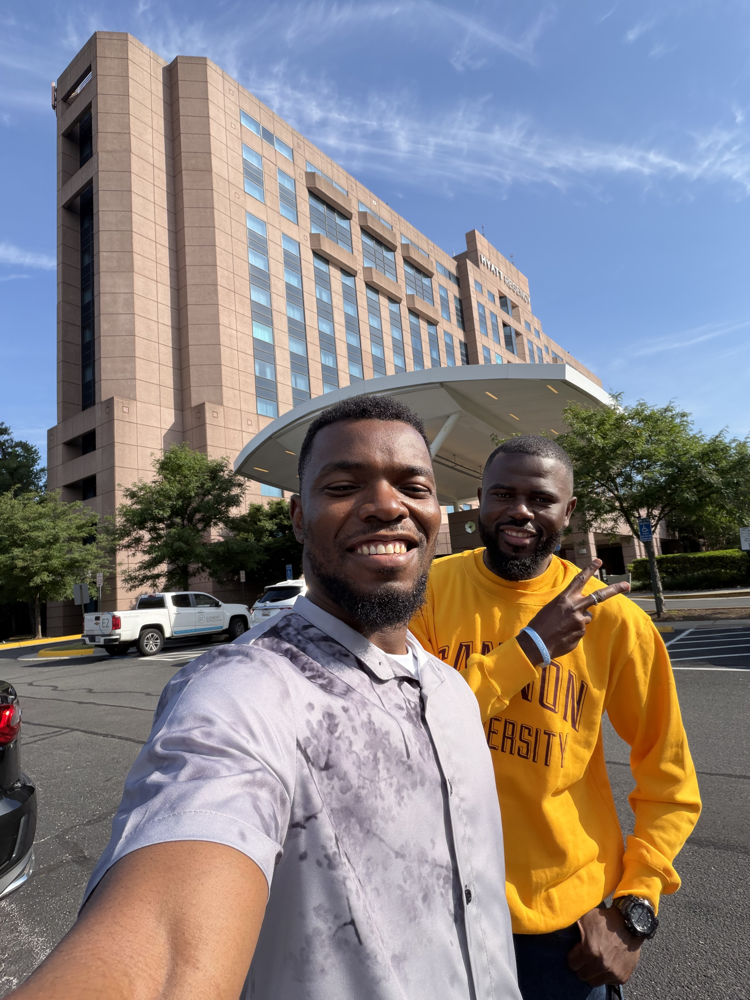

Earlier this summer, Gannon Hacks Cyber Club members attended the Cybersecurity & AI Summit hosted by the HIMSS Virginia Chapter in Charlottesville, under the theme "Securing Tomorrow: AI-Powered Defense." It was a full day of learning and connecting with cybersecurity professionals across healthcare and the wider tech industry.
Adversarial AI, and Governing It Like Any Other Software
The keynote, "Adversarial AI in the New Frontier" by Daniel Sergile of Palo Alto Networks, set the tone with a sharp look at how threat actors are now weaponizing AI, and what defenders must do to keep pace. Rob Garbee of Carilion Clinic followed with "Stop Admiring the Magic: Governing AI as Software." His thesis was simple but sharp: AI-specific risk doesn't need AI-siloed governance. The answer is routing AI risk into the controls we already have — security, privacy, vendor risk, SDLC, incident response — rather than standing up parallel committees for it.
"Garbee's point reframed how I think about AI governance entirely, it's not a new discipline, it's a new risk running through the disciplines we already have." — Abraham Klogo, Club President

Code Z: Night of the Living Malware
The standout of the day was "Code Z: Night of the Living Malware," a three-phase, real-world healthcare ransomware tabletop exercise. It walked attendees from initial access (a phishing email with a macro-laced attachment), through worm propagation across IoMT devices in the ICU, to data exfiltration, and finally double-extortion paired with a public disinformation wave, all mapped to the NIST SP 800-61 incident response lifecycle. It offered a genuine behind-the-scenes look at what unfolds during a healthcare cyberattack, and why patient safety and connected medical devices make this sector uniquely challenging. The "From Prototype to Practice" session that followed tied the exercise back to real-world implementation.

The CISO Panel: AI in the SOC
The day closed with a CISO panel on using AI tools in the SOC, moderated by Trip Humphrey alongside Paul Curylo, Chris Baker, Brady Miller, and Joe Braud. Key takeaways:
- AI accelerates alert triage and correlation, cutting through analyst alert fatigue
- It automates repetitive Tier-1 tasks, freeing analysts for investigation and threat hunting
- It acts as a force multiplier for lean security teams
- Humans still need to stay in the loop, given AI's probabilistic output
- Adversaries are adopting the same tools, so defenders can't afford to fall behind
"Hearing CISOs talk candidly about where AI actually helps, and where it doesn't, was more useful than any vendor pitch I've sat through." — Hiver Damien Ngoma
Thank You
A special thank-you to Ian Mack, who welcomed us into HIMSS membership as cybersecurity students from Gannon University, and to the Gannon University Graduate Student Association for the Spring/Summer 2026 Graduate Student Professional Development Grant that made attending possible.
One of the best conferences we've attended. Kudos to the HIMSS Virginia Chapter for organizing such a well-run, practical summit.